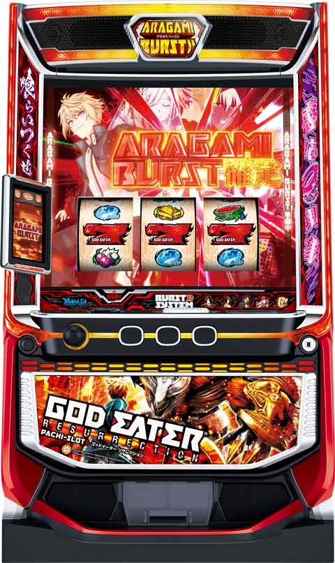
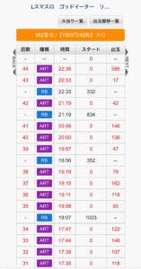
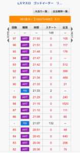
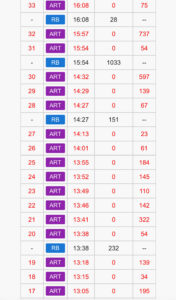
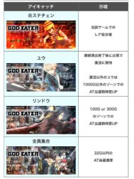

Lゴッドイーターリザレクション

【天井情報】 1000G+α リセット時 600G+α 規定G数のゾーンあり 100/200/300/450/600/750G 【リセット判別】 山佐なのでガックンあり 前兆は内部依存で前兆発生 【有利区間について】 エンディングで上位ST「漆黒の捕喰者」or プレミアムAT「神堕」に突入。 差枚+2200枚あたりで有利区間が切れると思われる。 差枚以外で有利区間が切れる条件は不明。
狙い目
【リセット狙い】
200Gから
100-150Gゾーン 40Gから
【AT間天井狙い】
積極派 600Gから
慎重派 650Gから
リザレクションゲート後 210Gから
AT駆け抜け後 210Gから
有利区間切断後
積極派 100Gから
慎重派 160Gから
【ゾーン狙い】
・100-150Gゾーン
一撃200-500枚後
20Gから
駆け抜け後
50Gから
逆鱗ハンニバル討伐敗北後
0Gから
リザレクションゲート後
100Gから
その他
50Gから
・300-350Gゾーン
一撃500-800枚後
210Gから
その他
250Gから
【差枚別狙い目】
エンディングまたは、プレミアムAT(差枚プラス時？)で有利切れるものとする。
①駆け抜け後(天井短縮)
・差枚+1500枚以上
天井狙い 180GからATまで
100-150ゾーン狙い 0Gから
積極派 0GからATまで
・差枚+1000枚以上
天井狙い 200GからATまで
100-150ゾーン狙い 30Gから
②リザレクションゲート後(天井短縮)
・差枚+1500枚以上
天井狙い 180GからATまで
100-150ゾーン狙い 100Gから
・差枚+1000枚以上
天井狙い 200GからATまで
③有利区間切れ後(プレミアムAT後)、(天井短縮)
・差枚+1500枚以上
積極派 30GからATまで
慎重派 50GからATまで
・差枚+1000枚以上
積極派 50GからATまで
慎重派 80GからATまで
④その他(天井短縮無し)
・差枚+1000枚以上
天井狙い 580GからATまで
100-150ゾーン狙い 30Gから
・差枚+1800枚以上
天井狙い 580GからATまで
100-150ゾーン狙い 0Gから
300-350ゾーン狙い 0Gから（一撃500枚以上後）
やめ時
基本１G回しアイキャッチ確認してやめ。
バカンスモードスタートは天国確認。
アイキャッチがリンドウまたは全員集合は天国確認。
アイキャッチリンドウは天国抜けても300ゾーンまで続行。
ステチェン赤背景はレア役の示唆だけ。
ハンニバル討伐戦敗北した場合も天国確定のため続行。
その他
【ハンニバル討伐戦敗北後の履歴の見方】
・ATのゲーム数が見れるデータ機
通常のアラガミ討伐が25G、ハンニバル討伐が50G。
獲得枚数が1000枚超えた時にハンニバルが出てきやすい。
ハンニバル敗北後は活性化バトル行くことも含めて60G以上ならハンニバル敗北後の可能性アップ。
・ATのゲーム数が見れないデータ機
ATのゲーム数見れない店舗だと1000枚超えてその後50Gハンニバル討伐戦行ってそうなのを履歴から予想する。
【履歴の見方】
店舗によって履歴が違う可能性あります。あくまで下記の履歴は参考程度に。
各店舗のデータ機で確認。
【駆け抜け後】
初当たり後ARTの粒がひとつ。
①の画像 21:19のAT
【プレミアムAT後】
2GでRB当選はプレミアムATと思われる。
②の画像 21:33のRB
【リザレクションゲート後】
ARTの途中に2G履歴で獲得枚数無しの履歴が出てくるのがリザレクションゲートのサイン？
2G履歴が出てこないケースもあり。
2G履歴は有利切れのサインかも？
②の画像 21:47のART
または一撃1200枚以上出ていればリザレクションゲートには突入してそう。
STで途中メダルが減るため、グラフや一撃での獲得枚数表記などで確認。
【逆鱗ハンニバル討伐戦敗北後】
一撃900-1000枚超えると突入？
50GのSTとなるため、最後のARTの獲得枚数が50枚以下になりやすい。
リザレクションゲート成功後即落ちの場合もあり。
③の画像 14:13のART
または、最後に50Gで勝利出来ないことから、一撃獲得枚数が800or900枚から1100枚くらいになる
①

②

③

【アイキャッチ】

参考元
基本情報
- メーカー: セブンリーグ
- 機械割: 97.9% 〜 114.9%
- 導入開始日: 2024年07月22日（月）
- ゲーム性概要: 通常時はレア役によるCZやゲーム数消化を契機に「アラガミバースト」を目指すゲーム性で、CZは期待度約35%の「アラガミ防衛戦」と期待度約57%の「殲滅モード」の2種類が存在する。 初当り時は純増約9.0枚/Gのストーリーパートから始まり、枚数獲得後は「アラガミ交戦」へ移行。「アラガミ交戦」は25G＋αのST型で、アラガミを撃破すればストーリーパートに突入。ストーリーパートの枚数は「神を喰らえ」で決定するが、「金ノ咢」や「神機覚醒」発生で大量上乗せに期待できる。 アラガミ撃破期待度がアップした上位STの「漆黒の捕喰者」、ループ率約90%の「神堕」など、大量出玉につながる強力トリガーにも注目！


打ち方
打ち方・小役
通常時の打ち方（小役狙い）
「最初に狙う絵柄」

左リール上段付近にBARを狙う。
「チェリー中段停止時」
成立役…神チェリー

狙えばBARが右下がりに揃う。
「BAR下段停止時」
成立役…1枚役orハズレorリプレイorベル（1枚、3枚、共通15枚）orチャンス目A

「チェリー下段停止時」
成立役…弱チェリーor強チェリー

右リール中段にリプレイで弱チェリー、リプレイ以外なら強チェリー。チェリー停止後、次ゲームのレバーON時にリール演出が発生すればチェリー変換（上位のチェリーに変換）発生のチャンスだ。
「スイカ停止時」
成立役…スイカorチャンス目B

中リールに（赤7を目安に）スイカを狙う。右リールはこぼしがないのでフリー打ちでOKだ。
「小役の停止例」

AT・ST中の打ち方
「ストーリーパート中」

ベルナビ時は第1停止のみ、赤7 or 青7の目押しが必要。
「ST中」 通常時と同様に、ナビ非発生時は左リールBAR狙いで消化すればOK。
変則押しはNG

押し順ナビなし時は左リール第1停止での消化を推奨する。
リーチ目／出目法則
出目法則
「チェリーのこぼし目」

小Vベルは弱チェリーor強チェリーのこぼし目（左1stのみ、擬似遊技時を除く）。
「スイカorチャンス目の出目法則」


チャンス目成立時にハサミ打ちをすると、1/2でスイカがテンパイ、1/2でチャンス目の2確目が停止するので、スイカがテンパイしたとしてもチャンス目の可能性は残る。
中段チェリー
神チェリーの恩恵

神チェリーの恩恵
| 状態 | 恩恵 |
|---|---|
| 通常時 | フリーズ抽選 |
| 通常時 | フリーズ非発生時はAT濃厚＋勝利ストック抽選 |
| CZ中 | 勝利濃厚 |
| ストーリーパート中 | フェンリルポイント20pt |
| アラガミバースト全体 | アマテラス出現の期待大 |
| アラガミ交戦中 | 勝利かつ、神機覚醒濃厚 |
| フェンリルファング中 | 7揃いかつ、アマテラスストック獲得 |
| 神を喰らえ中 | ＋1000枚以上 |
| 神機覚醒中 | ＋510枚以上 |
| リザレクションゲート中 | 神堕濃厚（キャラの覚醒状態不問） |
［チェリー変換］

弱チェリーを強チェリーへ、強チェリーを神チェリーへ昇格。弱チェリー→強チェリー→神チェリーのように2段階昇格することもある。
解析情報通常時
小役関連
高確中・CZ当選率
| 役 | 当選率 |
|---|---|
| 弱チェリー | 3.1% |
| スイカ | 3.1% |
| チャンス目 | 40.0% |
| 強チェリー | 87.5% |
超高確・特殊高確中のCZ当選率
| 役 | 超高確中 | 特殊高確中 |
|---|---|---|
| ベル | 0.8% | ー |
| リプレイ | 12.5% | ー |
| 弱チェリー | 50.0% | 25.0% |
| スイカ | 50.0% | 25.0% |
| チャンス目 | 87.5% | 50.0% |
| 強チェリー | 100% | 87.5% |
超高確中のみレア役以外でCZに当選する可能性がある。
小役確率
| 役 | 確率 |
|---|---|
| 3枚役 | 1/9.8 |
| リプレイ | 1/8.5 |
| スイカ | 1/79.9 |
| チャンス目A | 1/312.1 |
| チャンス目B | 1/312.1 |
| 弱チェリー | 1/102.4 |
| 強チェリー | 1/799.2 （チェリー変換を含むと約1/695） |
| 神チェリー | 1/16384.0 （チェリー変換を含むと約1/10772） |
| レア役合算 | 1/33.3 |
強チェリー・AT直撃当選率
チェリー変換で出現した強チェリーでも、同様の数値で抽選される。
内部状態関連
内部状態概要
通常時は4つの状態があり、滞在状態に応じてレア役成立時のCZ当選率が変化する。感応現象（ゲーム数前兆）中はベルの一部に押し順ナビが発生。感応現象中“以外”で発生した押し順ナビ時に、超高確への移行抽選がおこなわれる。 高確移行時は10Gの保証ゲーム数を獲得する。
内部状態概要
| 項目 | 内容 |
|---|---|
| 内部状態の種類 | 通常・高確・特殊高確・超高確 |
| （超）高確移行契機 | 弱チェリー、スイカ成立時の一部、 感応現象中以外の押し順ナビ時に超高確移行を抽選 |
| 特殊高確移行契機 | 作戦区域（前兆）終了時の一部 |
内部状態移行率 通常滞在時
| 役 | 高確へ | 超高確へ |
|---|---|---|
| 弱チェリー | 66.0% | ー |
| スイカ | 49.6% | 0.4% |
高確滞在時
| 役 | 高確へ | 超高確へ |
|---|---|---|
| 弱チェリー | 24.2% | 0.8% |
| スイカ | 9.8% | 9.8% |
※高確中の高確当選で保証ゲーム数を加算
感応現象 （ゲーム数前兆） 以外での押し順ベルナビ発生時 超高確移行率
| 契機 | 移行率 |
|---|---|
| 押し順ベルナビ | 25.0% |
※超高確中の超高確当選で保証ゲーム数を加算
規定ゲーム数
規定ゲーム数概要
通常時は規定のゲーム数に到達することでアラガミバーストに当選。最大天井は1000G＋αで、設定変更時は600G＋αに短縮される。アラガミバーストの当選比率はゲーム数消化：レア役契機のCZが約6：4。規定ゲーム数到達時は作戦区域（前兆ステージ）に移行する。
規定ゲーム数として選択される可能性のあるゲーム数
| 項目 | 内容 |
|---|---|
| ゲーム数 | 100G、200G、300G、450G、 600G、750G、1000G（＋前兆） |
100G、300Gのゾーンは期待度が高い。
作戦区域突入ゲーム数ごとの期待度
| ゾーン | ★×3.5 | デフォルト | ★×3.0 | ★×4.5 |
|---|---|---|---|---|
| 100G | 11 4 G | 11 5 G | 11 6 G | 11 7 G |
| 200G | 21 4 G | 21 5 G | 21 6 G | 21 7 G |
| 300G | 31 4 G | 31 5 G | 31 6 G | 31 7 G |
| 450G | 46 4 G | 46 5 G | 46 6 G | 46 7 G |
| 600G | 61 4 G | 61 5 G | 61 6 G | 61 7 G |
| 750G | 75 4 G | 75 5 G | 75 6 G | 75 7 G |
1の位が5のゲーム数で作戦区域へ突入するのがデフォルト。その他のゲーム数で突入すればチャンスとなる（液晶のゲーム数表示の加算は第3停止後）。
CZ確率
CZ確率（アラガミ防衛戦と殲滅モードの合算）
| 設定 | 確率 |
|---|---|
| 1 | 1/392.0 |
| 2 | 1/378.3 |
| 3 | 1/359.1 |
| 4 | 1/343.4 |
| 5 | 1/324.3 |
| 6 | 1/310.6 |
アラガミ防衛戦（CZ）
アラガミ防衛戦

10G以内にフリーズが発生すれば成功となるチャンスゾーン。リプレイ・レア役成立でチャンスだ。
アラガミ防衛戦性能
| 項目 | 内容 |
|---|---|
| 突入契機 | 通常時のレア役での抽選 |
| 継続ゲーム数 | 10G |
| 成功期待度 | 約35% |
| 消化中の抽選 | リプレイ、レア役でフリーズ（成功）抽選 |
| 消化中の抽選 | 最終ゲームのリプレイ、レア役は激アツ |
レバーON時、リール回転開始時、各リール停止時、払い出し後にフリーズ発生の可能性あり。
AT当選率
| 役 | 当選率 |
|---|---|
| ベル揃い | 0.2% |
| リプレイ | 16.6% |
| 弱チェリー | 25.0% |
| スイカ | 25.0% |
| チャンス目 | 50.0% |
| 強チェリー | 100% |
| 神チェリー | 100% |
殲滅モード（CZ）
殲滅モード

15G間、全役でアラガミの発見を抽選し、発見したアラガミを撃破できればアラガミバースト濃厚。登場するアラガミごとの弱点役を引けば勝利となる。 殲滅モードには発展保証が存在し、保証が残っている間は残りゲーム数が？になっても終了しない。 また、1回の殲滅モード中に5回目のバトル発展でAT当選が濃厚となる。
殲滅モード性能
| 項目 | 内容 |
|---|---|
| 突入契機 | 通常時のレア役での抽選 |
| 継続ゲーム数 | 15G＋α（バトル中は減算ストップ） |
| 成功期待度 | 約57% |
| 消化中の抽選 | 全役でアラガミ発見を抽選 |
| 消化中の抽選 | 発見後は撃破でAT確定 |
アラガミ発見期待度序列
| 役 | 内容 |
|---|---|
| ハズレ | 低 |
| ベル | ↓ |
| リプレイ | ↓ |
| レア役 | 高 |
アラガミの種類と弱点役
| アラガミ | 弱点役 |
|---|---|
| ヴァジュラ | チャンス目 |
| サリエル | チェリー |
| ボルグ・カムラン | スイカ |
| ラーヴァナ | 全レア役 |
バトル当選率
| 役 | 当選率 |
|---|---|
| ハズレ | 0.4% |
| ベル | 4.7% |
| リプレイ | 50.0% |
| レア役 | 100% |
バトル中の勝利書き換え当選率
| 役 | 当選率 |
|---|---|
| リプレイ | 15.6% |
| 弱チェリー | 25.0% |
| スイカ | 25.0% |
| チャンス目 | 50.0% |
| 強チェリー | 100% |
| 神チェリー | 100% |
| 弱点役 | 100% |
※リプレイ～チャンス目は弱点役でない時の当選率
残りゲーム数が？になった後はハズレで転落抽選がおこなわれる。
偏食因子
偏食因子解説

偏食因子が一定量貯まるとフェンリルファングへ移行。 演出による蓄積量示唆もある。
偏食因子の獲得契機
| No. | 契機 |
|---|---|
| 1 | 設定変更時 |
| 2 | CZ失敗時 |
| 3 | 600G、1000G到達時 |
| 4 | 漆黒の捕喰者終了時 |
| 5 | ST駆け抜け時 |
| 6 | 逆鱗ハンニバル討伐戦敗北時 |
前兆
前兆中の抽選

ゲーム数契機の前兆（作戦区域）の最後でアラガミとのバトル系の連続演出に発展した場合、 バトル中の小役で成功への書き換えを抽選 。本前兆中はアラガミ交戦の勝利ストックの獲得を抽選する。
また、レア役契機のCZ前兆よりもゲーム数による前兆が優先されるため、CZ前兆中に規定ゲーム数の前兆が始まった場合、前兆ゲーム数が短縮されてATが告知されるケースがある（プレミアム系演出で告知など）。
バトル系の連続演出勝利期待度
| アラガミ | 期待度 |
|---|---|
| ヴァジュラ | 38.4% |
| サリエル | 71.7% |
| ボルグカムラン | 72.3% |
| ラーヴァナ | 91.1% |
※勝利書き換え期待度は殲滅モード中のバトル中の勝利書き換え当選率と共通 ※弱点役成立時はオーバーキルのチャンス
演出動画
ロングフリーズ
神堕確定のプレミアム演出。実戦上は神チェリー成立時に発生していた。
解析情報ボーナス時
アラガミバースト（AT全体）
アラガミバースト確定画面

確定画面には、擬似遊技で赤7が揃うまで滞在。共通リプレイ・レア役成立時はアラガミ交戦の勝利ストック獲得を抽選する。サブ液晶タッチでストーリーパート中に流れるストーリーの選択が可能だ。
「赤7右下がり揃い」

アラガミバースト開始時の7揃いは右上がりがデフォルト。右下がりに揃った場合は勝利ストックを持っていることを示唆する。
フェンリルファング
フェンリルファング概要

通常時は内部的に偏食因子の獲得を抽選していて、規定量到達後のアラガミバースト当選で突入。10G＋α間、赤7揃いのたびに勝利ストックを獲得する。
勝利ストック当選率（7揃い当選率）
| 役 | 非当選 | フェイク 7狙え | 7揃い | 特殊 7揃い | 7揃い 合算 |
|---|---|---|---|---|---|
| 下記以外 | 60.5% | 31.3% | 7.8% | 0.4% | 8.2% |
| リプレイ | ー | 55.0% | 44.2% | 0.8% | 45.0% |
| 弱チェリー | ー | ー | 98.4% | 1.6% | 100% |
| スイカ | ー | ー | 98.4% | 1.6% | 100% |
| チャンス目 | ー | ー | 98.4% | 1.6% | 100% |
| 強チェリー | ー | ー | 87.5% | 12.5% | 100% |
| 神チェリー | ー | ー | 87.5% | 12.5% | 100% |
※特殊7揃い…右下がり7揃い（ストック2個）
残りゲーム数が「？」になった後も、フェイクを含む7揃いが発生している間は終了しない。非当選が選ばれた場合、その後のハズレの一部で終了。 神チェリーは7揃い確定かつ、アマテラスのストックも獲得濃厚だ。
ストーリーパート
ストーリーパート概要

本機の出玉増加区間となるのがストーリーパート。純増約9.0枚/Gで、規定の枚数を獲得するとアラガミ交戦（ST）へ移行する。消化中はリプレイとレア役でフェンリルポイントの獲得を抽選していて、ゲージがMAXになると結合崩壊ストックを獲得できる（神堕中のストーリーパートでは枚数上乗せ）。
ストーリーパート性能
| 項目 | 内容 |
|---|---|
| 突入契機 | 初当り時、アラガミ交戦でアラガミに勝利時 |
| 1Gあたりの純増 | 約9枚 |
| 枚数 | 初回は100枚 2回目以降は200枚以上 （枚数決定ゾーンで決定） |
| 消化中の抽選 | リプレイ・レア役でフェンリルポイント抽選 |
| 消化中の抽選 | ゲージMAXで結合崩壊ストックを獲得 （神堕中は枚数上乗せ） |
「フェンリルポイント」

ゲージがMAXになると、アラガミ交戦・漆黒の捕喰者中の弱点役が増加する（結合崩壊ストック）。神堕中はアラガミとのバトルがないので、結合崩壊ストックではなく、枚数が上乗せされる。
ストーリーパート中の獲得フェンリルポイント
| 役 | ポイント |
|---|---|
| リプレイ | 1pt |
| 弱チェリー | 3pt |
| スイカ | 3pt |
| チャンス目 | 5pt |
| 強チェリー | 20pt |
| 神チェリー | 20pt |
アラガミ交戦（ST）
アラガミ交戦概要

25G＋αのSTパートで、ゲーム数消化までにアラガミを撃破できれば再びストーリーパートへ突入。アラガミ交戦→ストーリーパートの流れを繰り返して出玉を増やすゲーム性だ。
アラガミ交戦の一部で発生する「逆鱗ハンニバル討伐戦」に勝利できれば、上位ST「漆黒の捕喰者」突入濃厚のリザレクションゲートへ突入する。
逆鱗ハンニバル討伐戦は負けても100G以内の引き戻し濃厚なので即ヤメ厳禁だ。
アラガミ交戦性能
| 項目 | 内容 |
|---|---|
| 突入契機 | ストーリーパート消化後 |
| 継続ゲーム数 | 25G＋α（活性化バトル中は減算ストップ） |
| 勝利期待度 | 約76% |
| 消化中の抽選 | リプレイ・レア役で活性化バトルを抽選し、 バトル勝利で報酬を獲得 |
| 消化中の抽選 | 結合崩壊抽選 |
| 消化中の抽選 | バーストシステム抽選 |
| 消化中の抽選 | 赤7揃いは勝利ストック獲得 |
※逆鱗ハンニバル討伐戦のみ、継続ゲーム数は50G＋α
成立役ごとのおもな抽選内容
| 役 | 内容 |
|---|---|
| リプレイ・レア役 | 結合崩壊抽選 |
| 赤7揃い | 勝利ストック獲得 |
| 赤7揃い | VSツクヨミ以外での狙え発生はダブル揃い確定 |
※活性化バトル以外の抽選内容
「アラガミ選択」

全9種類の中から、対戦するアラガミを選択。アラガミごとに弱点役や特徴が異なる。
「活性化バトル」

まずはアラガミとのバトル発展を抽選。リプレイ・レア役がバトル発展のメイン契機で、各アラガミの弱点役を引けば大チャンスとなる。
「赤7揃い」

アラガミ交戦中に赤7が揃えば勝利ストックを獲得。ツクヨミとの交戦中は赤7揃い確率が大幅にアップする。
「バトル勝利後」

内部的に勝利確定後はオーバーキル抽選がおこなわれ、当選時は勝利後の枚数決定ゾーンが神機覚醒になる。
「ST終了抽選」

残りゲーム数が0になった後は、ハズレで終了抽選がおこなわれる。黒いもやで画面が覆い尽くされると終了。ここでリプレイ・レア役を引けばバトル発展濃厚だ。
アラガミごとの弱点役と特徴
| アラガミ | 弱点役 | 特徴 |
|---|---|---|
| ハンニバル | チャンス目 | ー |
| アイテール | チェリー | ー |
| ヴィーナス | スイカ | ー |
| ツクヨミ | チャンス目 | 7揃い高確率 |
| カリギュラ | チェリー | チェリー変換高確率 |
| テスカトリポカ | チェリー、スイカ | ー |
| ディアウス・ピター | リプレイ以外の全役 | オーバーキル高確率 |
| アマテラス | ナシ | 勝利濃厚（ループ性あり） |
| 逆鱗ハンニバル 討伐戦 | ナシ | 勝利で リザレクションゲート |
アマテラスは勝利濃厚のアラガミで、初期弱点役はないが、結合崩壊が発生しやすいのが特徴。 作戦時間（25G）内に勝利できれば次のSTでもアマテラス出現濃厚 （エンディング到達時を除く）だ。残りゲーム数が???になった場合は強制的に勝利となり、アマテラスのループは終了。
逆鱗ハンニバル討伐戦はアマテラスと同様に初期の弱点役がない代わりに ゲーム数が50G＋α となり、結合崩壊発生率がアップ。勝利期待度は約75%と高く、勝利できればリザレクションゲートへ突入する（漆黒の捕喰者以上濃厚）。
［ハンニバル］

［アイテール］

［ヴィーナス］

［ツクヨミ］

［カリギュラ］

［テスカトリポカ］

［ディアウス・ピター］

［アマテラス］

［逆鱗ハンニバル討伐戦］

活性化バトル発展率
| 役 | その他の アラガミ | アマテラス | 逆鱗ハンニバル 討伐戦 |
|---|---|---|---|
| リプレイ | 50.0% | 100% | 40.2% |
| レア役 | 100% | 100% | 100% |
活性化バトル勝利当選率
| 役 | 当選率 |
|---|---|
| リプレイ | 20.0% |
| 弱チェリー | 25.0% |
| スイカ | 25.0% |
| チャンス目 | 25.0% |
| 強チェリー | 100% |
| 神チェリー | 100% |
| 弱点役 | 100% |
※リプレイ～チャンス目は弱点役でない時の当選率
アマテラスを除き、リプレイはバトル確定ではないので、バトル当選時にのみ勝利抽選がおこなわれる。 チェリーが弱点のアラガミで強チェリーを引けば、オーバーキル当選の期待大！
勝利ストックの使用タイミング
勝利ストックは活性化バトル突入時やアラガミ交戦中の停止フリーズ時に使用。弱点役・強チェリー・神チェリーは勝利濃厚なので、勝利ストックが持ち越される可能性が高い。
逆鱗ハンニバル討伐戦の発生条件

一度のATで1000枚以上獲得すると、逆鱗ハンニバル討伐戦発生の可能性大。ストーリーパート終了後のスタンバイ画面で発生が告知される（アマテラスループ中や漆黒の捕喰者中を除く）。
アラガミの決定契機＆振り分け

スタンバイ画面で引いた小役で出現するアラガミを抽選。アラガミバースト（ストーリーパート〜アラガミ交戦）中に神チェリーを引いた場合はアマテラス出現濃厚だ。
アラガミ振り分け
| 役 | 通常アラガミ | チャンスアラガミ |
|---|---|---|
| 下記以外 | 75.2% | 24.8% |
| リプレイ | 29.3% | 70.7% |
| レア役 | ー | 100% |
アラガミの区分
| 区分 | アラガミ |
|---|---|
| 通常アラガミ | ハンニバル/アイテール/ヴィーナス |
| チャンスアラガミ | ツクヨミ/カリギュラ/テスカトリポカ |
強チェリー成立時はディアウス・ピター以上濃厚。アマテラス選択時を除き、1回のATで約1000枚以上獲得している場合は、逆鱗ハンニバル討伐戦へ突入する。 アラガミの抽選とは別に、成立役に応じた勝利ストック抽選もあり。
「アラガミ出現画面」 アラガミの情報が表示されている画面から活性化バトルの抽選はおこなわれているので、ここで弱点役を引いた場合も勝利濃厚だ。

オーバーキル当選率
内部的に勝利確定後の リプレイとレア役でオーバーキルの発生 を抽選。オーバーキルが確定した後は勝利ストック抽選がおこなわれる。 神チェリーは勝利確定前でなくとも、成立した時点で神機覚醒確定。強チェリーや弱点役でのオーバーキル抽選に漏れた場合、神を喰らえの報酬昇格が抽選される。 ディアウス・ピターはオーバーキル高確となっているため、上表の抽選に加え追加でオーバーキル抽選がおこなわれる。
勝利確定後・オーバーキル当選率
| 役 | 非弱点役 | 弱点役 |
|---|---|---|
| リプレイ | 0.4% | 25.0% |
| 弱チェリー | 0.4% | 25.0% |
| スイカ | 0.4% | 25.0% |
| チャンス目 | 0.4% | 50.0% |
| 強チェリー | 25.0% | 100% |
| 神チェリー | 100% |
ディアウス・ピターのオーバーキル当選率
| 役 | 当選率 |
|---|---|
| リプレイ | 25.0% |
| スイカ | 75.0% |
| 弱チェリー | 75.0% |
| チャンス目 | 75.0% |
※弱点役は不問
結合崩壊当選率
活性化バトル当選時＆バトル当選後の前兆中に結合崩壊が抽選され、当選時はバトル発展時に告知。当選していた場合、バトル発展までの前兆中も弱点役が増えた状態で勝利抽選がおこなわれる。 ※バトル発展時に勝利が決まっていた場合は結合崩壊抽選はナシ
結合崩壊当選率
| 役 | その他の アラガミ | 逆鱗ハンニバル 討伐戦 | アマテラス |
|---|---|---|---|
| リプレイ | 0.4% | 50.0% | 100% |
| 弱チェリー | 0.4% | 94.9% | 100% |
| スイカ | 0.4% | 94.9% | 100% |
| チャンス目 | 14.8% | 100% | 100% |
| 捕喰目 | 100% | 100% | 100% |
残り15G以下・結合崩壊当選時の弱点役振り分け
| 弱点役 | 振り分け |
|---|---|
| リプレイ | 33.2% |
| チェリー | 22.3% |
| スイカ | 22.3% |
| チャンス目 | 22.3% |
※捕食目契機での結合崩壊時も有効
アラガミ交戦のゲーム数が残り15G以下で結合崩壊に当選した場合、リプレイが弱点役になりやすい。
アラガミ交戦中の7を狙え発生確率
| 7揃い | ツクヨミ以外 | 通常ツクヨミ | 超ツクヨミ |
|---|---|---|---|
| フェイク | ー | 1/27.2 | 1/6.3 |
| 通常7揃い | ー | 1/72.0 | 1/1.7 |
| 特殊7揃い | 1/65536 | 1/5041.2 | 1/16.0 |
| 7揃い合算 | 1/65536 | 1/71.0 | 1/1.5 |
| カットイン発生時の 期待度 | 100% | 約28% | 約80% |
7を狙えカットインは、基本的に対戦アラガミがツクヨミの場合に発生。ツクヨミ以外での狙え発生時は特殊7揃い（右下がり＝ストック2個）が濃厚となる。 ツクヨミ選択時の約1%で超ツクヨミが選択。超ツクヨミ中は超高確率で7が揃うため、大量ストックの期待大だ。見た目での判別はできないが、通常ツクヨミと比べてカットイン確率も揃う期待度も別格に高いので、判別は簡単だ。
バーストポイント蓄積抽選

毎ゲーム、バーストポイントの獲得抽選がおこなわれているが、とくに活性化バトル“非発展”のリプレイはポイントを獲得しやすい。 リール左下のフェンリルマークが高速点滅すると、残り1ptでのバーストシステム発動示唆になる。
アラガミ交戦中のチェリー変換発生率 カリギュラ以外
| 成立役 | 強チェリーへ | 神チェリーへ | トータル |
|---|---|---|---|
| 弱チェリー | 1.92% | 0.08% | 2.00% |
| 強チェリー | － | 1.95% | 1.95% |
カリギュラ
| 成立役 | 強チェリーへ | 神チェリーへ | トータル |
|---|---|---|---|
| 弱チェリー | 23.05% | 1.95% | 25.00% |
| 強チェリー | － | 20.00% | 20.00% |
カリギュラは神を喰らえや神機覚醒中も交戦中と同様の数値で変換が抽選されるのでアツい。
結合崩壊
結合崩壊概要

アマテラスと逆鱗ハンニバルを除き、各アラガミには最低1つの弱点役が存在。 結合崩壊を起こすことで弱点役を増やせる ので、勝利期待度がアップする。リール右側に、現在の対応役（アラガミごとの弱点役）が表示されていて、結合崩壊時は追加で弱点役となった役も表示される。
［捕喰目を狙え］

逆押しで左リールに青7を狙い、中段に青7が止まれば結合崩壊だ。
バーストシステム
バーストシステム概要

バーストシステム・キャラごとの性能
| キャラ | 性能 |
|---|---|
| コウタ | リプレイでバトル発展 |
| アリサ | ベルでバトルのチャンス、リプレイはバトル発展 |
| ソーマ | ベルorリプレイでバトル発展 |
| サクヤ | バーストシステムロング継続 |
| リンドウ | 勝利＆オーバーキル濃厚 |
内部的に存在するバーストポイントを規定量獲得すると、バーストシステムが発動。発動中はSTのゲーム数減算がストップし、キャラに応じた優遇抽選が受けられる。
アリサ・ソーマ・漆黒リンドウの ベルでの活性化バトル当選率＆バトル勝利当選率
| キャラ | 発展率 | 勝利当選率 |
|---|---|---|
| アリサ | 50.0% | 20.0% |
| ソーマ | 100% | 20.0% |
| 漆黒リンドウ | 100% | 20.0% |
枚数決定ゾーン
神を喰らえ概要

基本的に、アラガミ勝利時は神を喰らえでストーリーパートの枚数を決定。1Gの成立役で上乗せ枚数を抽選していて、演出パターンによって期待値が変化する。
神を喰らえ性能
| 項目 | 内容 |
|---|---|
| 突入契機 | アラガミ交戦勝利後 |
| 継続ゲーム数 | 1G固定 |
| 上乗せ | 成立役で枚数を上乗せ（最低200枚） |
パターンごとの上乗せ性能
| パターン | 内容 |
|---|---|
| 壱式 | 通常上乗せ |
| ミズチ | 連打上乗せ |
| パニッシャー | 長押し上乗せ |
| ベンディガー | 2択上乗せ（正解で510枚以上） |
| 金ノ咢 | プレミアム上乗せ |
ベンディガーと金ノ咢の発生契機
| 上乗せ | 契機 |
|---|---|
| ベンディガー | リプレイ成立時の一部 |
| 金ノ咢 | ハズレ成立時の一部 |
［壱式］

［ミズチ］

［パニッシャー］

［ベンディガー］

［金ノ咢］

神機覚醒概要

アラガミ交戦でオーバーキルが発生した場合に突入する上位の枚数決定ゾーン。8G＋α間、毎ゲーム30枚以上が上乗せされる。リプレイやレア役は大量上乗せのチャンスだ。
神機覚醒性能
| 項目 | 内容 |
|---|---|
| 突入契機 | アラガミ交戦でオーバーキル発生 |
| 継続ゲーム数 | 8G消化後のハズレで転落抽選 （継続率は65%・72%・85%の3種類） |
| 上乗せ枚数 | 毎ゲーム＋30枚以上 |
| 上乗せ枚数 | リプレイ、レア役は大量上乗せのチャンス （レア役はループ上乗せ抽選もあり） |
「ループ上乗せ」 神機覚醒中のレア役成立時の一部で、ループ上乗せ抽選がおこなわれる。当選時は成立役ごとの上乗せに加え、1Gの上乗せを98.8%でループさせたゲーム数を獲得。 ループ上乗せ当選時はサクヤもしくは漆黒リンドウ連撃上乗せが発生する。
成立役ごとの最低上乗せ枚数
| 役 | 枚数 |
|---|---|
| 下記以外 | 30枚 |
| リプレイ | 50枚 |
| 弱チェリー | 100枚 |
| スイカ | 100枚 |
| チャンス目 | 200枚 |
| 強チェリー | 400枚 |
| 神チェリー | 510枚 |
成立役ごとの最低上乗せ枚数
| 役 | 弱点役以外 | 弱点役 |
|---|---|---|
| 下記以外 | 200枚 | ー |
| リプレイ | 250枚 | 400枚 |
| 弱チェリー | 300枚 | 400枚 |
| スイカ | 300枚 | 400枚 |
| チャンス目 | 300枚 | 510枚 |
| 強チェリー | 510枚 | 1000枚 |
| 神チェリー | 1000枚 | ー |
ベンディガーと金ノ咢の上乗せ抽選内容
| 上乗せ | 内容 |
|---|---|
| ベンディガー | ● 2択の押し順当て正解で510枚以上を上乗せ ● 上乗せする可能性のある枚数は510枚・750枚・1000枚・2000枚・3000枚 ● 内部的にそれぞれ50%で突破抽選がおこなわれ、抽選結果の枚数が上乗せされる |
| 金ノ咢 | ● 510枚・750枚・1000枚・2000枚・3000枚の中から抽選で上乗せ枚数を決定する |
ベンディガー・突破回数ごとの上乗せ枚数
| 突破回数 | 上乗せ（カッコ内は上乗せ獲得期待度） |
|---|---|
| 0回 | 510枚 （最低保証） |
| 1回 | 750枚 （50%） |
| 2回 | 1000枚 （25%） |
| 3回 | 2000枚 （12.5%） |
| 4回 | 3000枚 （6.25%） |
金ノ咢・上乗せ枚数振り分け
| 枚数 | 振り分け |
|---|---|
| 510枚 | 18.8% |
| 750枚 | 18.8% |
| 1000枚 | 18.8% |
| 2000枚 | 18.8% |
| 3000枚 | 25.0% |
金ノ咢の上乗せ枚数はほぼ均等で、3000枚の振り分けがもっとも多い。
リザレクションゲート
リザレクションゲート概要


逆鱗ハンニバル討伐戦に勝利すると突入する、上位ST突入濃厚ゾーン。キャラが覚醒するたびに恩恵を獲得できる。
リザレクションゲート性能
| 項目 | 内容 |
|---|---|
| 突入契機 | 逆鱗ハンニバル討伐戦勝利後 |
| 継続ゲーム数 | 50～99G |
| 消化中の抽選 | キャラ覚醒抽選 |
リザレクションゲート自体の継続ゲーム数は50Gだが、逆鱗ハンニバル討伐戦勝利時に残っていたゲーム数が加算されるので、最大99Gとなる（1Gで勝利した場合の50G＋49G）。
覚醒キャラごとの報酬
| キャラ | 内容 |
|---|---|
| ユウ | 漆黒の捕喰者 |
| コウタ | 結合崩壊＋1 |
| アリサ | 結合崩壊＋1（トータル＋2） |
| リンドウ | 神堕 |
※表内の上のキャラから一人ずつ覚醒、4人目のリンドウが覚醒で神堕へ突入
神チェリー成立時は、覚醒キャラ不問で神堕へ突入する。
漆黒の捕喰者（上位ST）
漆黒の捕喰者概要

おもにリザレクションゲートを契機に突入する上位ST。基本的なゲームの流れはアラガミ交戦と同様で、アラガミ勝利とストーリーパートをループして出玉増加を目指す。 ストーリーパート1G目に結合崩壊ストックを獲得 するため、通常よりも弱点役が一つ多い状態になる。
漆黒の捕喰者性能
| 項目 | 内容 |
|---|---|
| 突入契機 | リザレクションゲート後、 ストーリーパート終了時の一部、エンディング後 |
| 継続ゲーム数 | 25G＋α（活性化バトル中は減算ストップ） |
| 勝利期待度 | 約84% |
| 消化中の抽選 | 基本的にアラガミ交戦と共通 |
| その他 | 結合崩壊ストックを一つ持った状態でスタート |
突入契機のメインはリザレクションゲートだが、ストーリーパート終了時の一部やエンディング終了後の有利区間移行時など、リザレクションゲートを経由せずに漆黒の捕喰者へ突入するパターンもある。
バーストシステム

漆黒の捕喰者中のバーストシステムは、内部的にソーマが選択されるためチャンス（4Gのゲーム数減算ストップ＋リプレイ・ベルで活性化バトル発展）。
神堕（プレミアムAT）
神堕概要

ロングフリーズなどから突入する1セット4GのプレミアムAT。成功時は510枚以上が上乗せされるため、破壊力は抜群だ。
神堕性能
| 項目 | 内容 |
|---|---|
| 突入契機 | ロングフリーズ、リザレクションゲートの一部、 エンディング後の一部 |
| 継続ゲーム数 | 4GのST型 |
| 消化中の抽選 | 全役で成功抽選 |
| その他 | 成功で＋510枚以上獲得 |
神堕成功当選率
| 役 | 当選率 |
|---|---|
| 下記以外 | 30.1% |
| リプレイ | 92.2% |
| レア役 | 100% |
神堕成功後のストーリーパート中は枚数上乗せに加えて神堕の成功ストック抽選もおこなわれるが、ストックを獲得しても告知されないので判別できない。
ツラヌキ・有利区間
ツラヌキ条件と恩恵
| 項目 | 内容 |
|---|---|
| 条件 | エンディング到達後 |
| 恩恵 | 漆黒の捕喰者or神堕 |
エンディング後など、有利区間リセット時は漆黒の捕喰者以上へ突入する。
演出情報
上位＆プレミアムAT
漆黒の捕喰者中の演出法則
| 演出 | パターン | 示唆 |
|---|---|---|
| アラガミ 討伐 | オウガテイル | 勝利期待度★×2 |
| アラガミ 討伐 | コンゴウ | 勝利期待度★×3 |
| アラガミ 討伐 | セクメト | 勝利期待度★×4 |
| オーラ | 弱 | 勝利期待度★×2 |
| オーラ | 中 | 勝利期待度★×3 |
| オーラ | 強 | 勝利期待度★×4 |
| 回想 | 白（回想時の数字3or4） | 勝利期待度★×2 |
| 回想 | 青（回想時の数字6） | 勝利期待度★×3 |
| 回想 | 赤（回想時の数字8） | 勝利期待度★×4.5 |
［オーラ：中］

リールロック・パターンごとの期待度
| ロックパターン | ウエイト時間 | 期待度 |
|---|---|---|
| 3コマ上がる | 約1秒 | デフォルト |
| 1コマ上がる | 約1秒 | ★×5 |
| ロングウエイトのみ | 約3秒 | ★×5 |
| 3コマ上がる＋ロングウエイト | 約3秒 | ★×5 |
カウントダウン・パターンごとの期待度
| パターン | 期待度 |
|---|---|
| 通常 | デフォルト |
| 赤文字 | ★×4.5 |
| ゴッドイーター柄 | ★×5 |
| 数字が逆向き | ★×5 |
| 数字が小さいor大きい | ★×5 |
| 数字が非表示 | ★×5 |
違和感系演出一覧＆停止フリーズの発生タイミング
| 演出 | パターン |
|---|---|
| 違和感系演出 | BGMストップ |
| 違和感系演出 | ランプ全消灯 |
| 違和感系演出 | 筐体バイブ |
| 違和感系演出 | 感応現象ランプ点滅 |
| 違和感系演出 | アラガミバーストランプ点滅 |
| 停止フリーズ 発生タイミング | リール回転開始後 |
| 停止フリーズ 発生タイミング | 第1停止後 |
| 停止フリーズ 発生タイミング | 第2停止後 |
| 停止フリーズ 発生タイミング | 第3停止後 |
| 停止フリーズ 発生タイミング | 払い出し後 |
［カウントダウン］

通常時
ステージ解説
| ステージ | 内容 |
|---|---|
| エントランス | 基本ステージ |
| 訓練場 | 基本ステージ |
| アリサの部屋 | 基本ステージ |
| カフェ | 高確示唆 |
| バカンスモード | 特殊高確示唆 |
| 月の楽園 | 超高確示唆 |
AT終了後にバカンスモードへ移行した場合は特殊高確示唆とはならないが、100GのゾーンでのAT当選濃厚となる。
［エントランス］

［訓練場］

［アリサの部屋］

［カフェ］

［バカンスモード］

作戦区域終了後、バカンスモードへ移行していなくても特殊高確の可能性はある。
［月の楽園］

偏食因子の蓄積示唆演出
| パターン | 示唆 |
|---|---|
| 小 | 蓄積：少 |
| 中 | 蓄積：中 |
| 大 | 蓄積：高 |
［小］

［中］

［大］

通常時・前兆に期待できる演出
| 演出 | 期待度 | 特徴 |
|---|---|---|
| 弱肉強食 | 期待度：★×2 | ヴァジュラ出現でチャンス |
| 電光掲示板 | 期待度：★×2 | 赤文字は期待大 |
| レンルーレット | 期待度：★×3 | 強レア役示唆 強レア役否定でチャンス |
| シオを想うソーマ | 期待度：★×3 | 強レア役示唆 強レア役否定でチャンス |
| サクヤお色気 | 期待度：★×4 | 強レア役示唆 強レア役否定でチャンス |
| 黒い霧 | 期待度：★×4 | 発生した時点でチャンス |
［弱肉強食］

［シオを想うソーマ］

［サクヤお色気］

演出法則・小ネタ
| 演出 | パターン | 内容 |
|---|---|---|
| 押し順ナビ | リール回転 開始時に発生 | チャンス |
| 押し順ナビ | リプレイ揃い | 本前兆の期待大 |
| サブ液晶 ヒバリナビ （※1） | 白セリフ | 期待度：★×1 |
| サブ液晶 ヒバリナビ （※1） | 緑セリフ | 期待度：★×2 |
| サブ液晶 ヒバリナビ （※1） | 赤セリフ | 期待度：★×4 |
| サブ液晶 ヒバリナビ （※1） | その調子です（緑） | 高確濃厚 |
| サブ液晶 ヒバリナビ （※1） | 喜 | 期待度：★×2 |
| サブ液晶 ヒバリナビ （※1） | 怒 | 期待度：★×2 |
| サブ液晶 ヒバリナビ （※1） | 哀 | 期待度：★×2 |
| サブ液晶 ヒバリナビ （※1） | 楽 | 期待度：★×3 |
| サブ液晶 ヒバリナビ （※1） | ずっこけ | 期待度：★×4 |
| サブ液晶 ヒバリナビ （※1） | その他 | 偏食因子蓄積示唆演出が 発生する可能性あり |
| キャラ通過演出 ［最後尾のキャラ］ | コウタ | 期待度：★×1／デフォルト |
| キャラ通過演出 ［最後尾のキャラ］ | アリサ | 期待度：★×1／高確示唆 |
| キャラ通過演出 ［最後尾のキャラ］ | ソーマ | 期待度：★×2／ゲーム数前兆示唆 |
| キャラ通過演出 ［最後尾のキャラ］ | サクヤ | 期待度：★×3／ゲーム数前兆示唆 |
| キャラ通過演出 ［最後尾のキャラ］ | ユウ | 期待度：★×4／ゲーム数前兆示唆 |
| キャラ通過演出 ［最後尾のキャラ］ | リンドウ | 期待度：★×5／ゲーム数前兆示唆 |
| キャラ通過演出 ［進む方向］ （※2） | 左→右 | リプレイ以外 |
| キャラ通過演出 ［進む方向］ （※2） | 右→左 | リプレイ |
| シオを想うソーマ | 期待度：★×3 | |
| レンルーレット | 期待度：★×3 | |
| サクヤお色気 | 期待度：★×4 | |
| シオインパクト | 期待度：★×5 | |
| リンドウ予告 | 期待度：★×5 | |
| セリフ演出 | リンドウ | 100Gor300Gのゾーンがチャンス |
| セリフ演出 | レンorエリナ | 早めのAT当選に期待 |
| セリフ演出 | 防衛班単独 | 出現頻度が高いほど、 早めのAT当選に期待できる |
| セリフ演出 | 掛け合いに 防衛班登場 | 防衛班単独よりも、 早めのAT当選期待度が高い |
| セリフ演出 | 赤文字 | 100Gのゾーンが大チャンス |
※1…サブ液晶のヒバリに？が出現したタイミングでタッチするとセリフやアクションが発生して、内部状態や前兆期待度を示唆する ※2…対応役矛盾で大チャンス
［サブ液晶のヒバリ］

［キャラ通過演出］


液晶上下に光が流れた後、リール上をキャラが通過。光が左から右へなら、キャラも左から右へ走っていく。この光とキャラの向きが矛盾すれば大チャンスだ。
［シオインパクト］

表示される文字が「カミアツ」なら神チェリーが成立!?
［リンドウ予告］

発展時に発生する可能性のある激アツ演出！
［セリフ演出：エリナ］

［セリフ演出：防衛班］ 防衛班のメンバーは、アネット、フェデリコ、タツミ、カノン、ブレンダン、ジーナ、シュン、カレルの8人。

連続演出のチャンスアップ
| 連続演出 | チャンスアップ |
|---|---|
| 共通 | ● 赤タイトル |
| ババ抜き | ● 1＆2G目：「見えたっ！」 |
| クッキング | ● 1＆2G目：アリサが張り切っている |
| リール消灯 | ● 1＆2G目：カットイン発生 |
| 神機整備 | ● 1G目：テキパキ作業 ● 2G目：自信あり |
| ビーチバレー | ● 1G目：アネット張り切り ● 2＆3G目：カノン張り切り/カノン＆リッカの声援 |
| ハンニバル討伐 | ● 4G目：カットイン発生 |
※リール消灯はフェデリコver.とアネットver.のどちらも共通
［チャンスアップ］


チャンスアップ時は効果音や液晶にエフェクトが発生する。
ステージ固有ステップアップ演出・示唆内容
| 段階 | 示唆 |
|---|---|
| SU1 | リプレイがデフォルト、ベルは高確滞在濃厚 |
| SU2 | ベルはデフォルト、リプレイは高確滞在濃厚、 チャンス目A成立でCZの期待大 |
| SU3 | レア役以上濃厚 |
| SU4 | チャンス目・強チェリー・神チェリー、 弱チェリーorスイカはCZ濃厚 |
女の子ステップアップ演出・示唆内容
| 段階 | 示唆 |
|---|---|
| SU1 | 神チェリー濃厚 |
| SU2 | レア役以上濃厚 |
| SU3 | レア役以上濃厚、チャンス目・強チェリー・神チェリーに期待 |
| SU4 | チャンス目以上濃厚かつ大チャンス |
ステップごとに対応役があり、矛盾すれば高確やCZ当選のチャンス。ステップアップ演出はステージ対応パターンと全ステージ対応の女の子パターンの2種類があり、女の子パターンは発生した時点でレア役以上濃厚となる。
［エントランスのステップアップ演出］

［アリサの部屋のステップアップ演出］

［月の楽園のステップアップ演出］

［女の子ステップアップ演出］

アイキャッチの示唆
| アイキャッチ | 示唆 |
|---|---|
| ユウ | 連続演出失敗時は復活に期待、 その他は1000Gのゾーン（最大天井）否定示唆 |
| リンドウ | 100or300Gのゾーンの期待度アップ |
| 全員集合 | 32G以内のAT当選濃厚 |
| 炎 | レア役成立示唆 |
| 男性キャラor 女性キャラの連続 | 早めのゾーンでのAT当選に期待 |
ステージチェンジ時のアイキャッチは男性キャラと女性キャラが交互に出現するのが基本パターン。男性キャラ→男性キャラ、女性キャラ→女性キャラのように同じ性別のキャラが連続した場合は早いAT当選のチャンスとなる。
［ユウ］

［リンドウ］

［全員集合］

［炎］

ターミナル演出の示唆
| キャラ | 示唆 |
|---|---|
| 漆黒リンドウ | 100GのゾーンでのAT当選期待度アップ |
| シオ | 100GのゾーンでのAT当選期待度アップ |
| アリウスノーヴァ | 100GのゾーンでのAT当選期待度アップ |
| アマテラス | 100Gor300GのゾーンでのAT当選期待度アップ |
| リンドウ | 100Gor300GのゾーンでのAT当選期待度アップ |
| レン | 早めのAT当選に期待 |
［漆黒リンドウ］

［シオ］

［アリウスノーヴァ］

［アマテラス］

［リンドウ］

［レン］

前兆
作戦区域

規定ゲーム数到達を示唆する前兆ステージ。ステージがアップするほど期待度が上がり、最終的に発展する連続演出でアラガミバーストの当否を告知する。
作戦区域ステージ序列
| ステージ | 内容 |
|---|---|
| 贖罪の街 | 低 |
| 愚者の空母 | ↓ |
| 鎮魂の灰寺 | 高 |
［贖罪の街］

［愚者の空母］

［鎮魂の灰寺］

演出期待度
| 演出 | パターン | 期待度 |
|---|---|---|
| 作戦区域突入時 サブ液晶タッチ | 白セリフ | 期待度：★×2 |
| 作戦区域突入時 サブ液晶タッチ | 緑セリフ | 期待度：★×3 |
| 作戦区域突入時 サブ液晶タッチ | 赤セリフ | 期待度：★×4 |
| 作戦区域 開始時のステージ | 贖罪の街 | デフォルト |
| 作戦区域 開始時のステージ | 愚者の空母 | 期待度：★×4 |
| 作戦区域 開始時のステージ | 鎮魂の灰寺 | 期待度：★×5 |
| キャラ フラッシュバック | コウタ | 期待度：★×2 |
| キャラ フラッシュバック | アリサ | 期待度：★×2 |
| キャラ フラッシュバック | ソーマ | 期待度：★×2 |
| キャラ フラッシュバック | サクヤ | 期待度：★×3 |
| キャラ フラッシュバック | ユウ | 期待度：★×4 |
| キャラ フラッシュバック | レン | 期待度：★×4 |
| キャラ フラッシュバック | シオ | 期待度：★×4 |
| キャラ フラッシュバック | リンドウ | 期待度：★×5 |
| キャラ フラッシュバック | ケロット | 期待度：★×5 |
注目演出
| 演出 | 期待度 | 特徴 |
|---|---|---|
| レンルーレット | 期待度：★×3 | 強レア役示唆 強レア役否定でチャンス |
| サクヤお色気 | 期待度：★×4 | 強レア役示唆 強レア役否定でチャンス |
| ユウタイマー | 期待度：★×4 | 発生した時点でチャンス 最後のセリフに注目 |
| シャッター擬似連 | 期待度：★×4 | 発生した時点でチャンス 発展orAT告知 |
| リンドウ予告 | 期待度：★×5 | 発展時に発生の可能性あり |
演出法則
| 演出 | 法則 |
|---|---|
| アイテム発見 | アラガミエキス（白文字）発見でAT濃厚 |
| アラガミ討伐 | セクメト （赤いアラガミ） でレア役否定なら大チャンス |
| ソーマ感知 | おもにステージアップ示唆となる演出 発展時に発生すればチャンス |
| 通信 | おもにステージアップ示唆となる演出 発展時に発生すればチャンス |
| ツバキ報告 | おもにステージアップ示唆となる演出 発展時に発生すればチャンス |
| 押し順ナビ | リール回転開始時に発生でチャンス |
| 押し順ナビ | リプレイが揃えば大チャンス |
［作戦区域突入時サブ液晶タッチ］

作戦区域突入ゲームでサブ液晶をタッチすると、ヒバリのセリフ演出が発生。セリフの色で本前兆期待度を示唆する。
［キャラフラッシュバック：サクヤ］

［ソーマ感知］

［通信］

［ツバキ報告］

発展時のステージ別・連続演出
| ステージ | 連続演出 |
|---|---|
| 贖罪の街 | 賢者の石 |
| 愚者の空母 | アラガミ暴走 |
| 鎮魂の灰寺 | ハンニバル討伐 |
作戦区域後の連続演出は、基本的にステージに対応している。贖罪の街滞在時は発展先の演出矛盾で大チャンス、愚者の空母からハンニバル討伐発展でチャンス、賢者の石発展で大チャンスとなる。
発展時のステージ＆連続演出別・期待度
| ステージ | 賢者の石 | アラガミ暴走 | ハンニバル討伐 |
|---|---|---|---|
| 贖罪の街 | ★×2 | ★×5 | ★×5 |
| 愚者の空母 | ★×5 | ★×3 | ★×4 |
| 鎮魂の灰寺 | ー | ー | ★×4 |
連続演出のチャンスアップ
| ゲーム数など | 賢者の石 | アラガミ暴走 | ハンニバル討伐 |
|---|---|---|---|
| 導入 | 赤タイトル | ||
| 1G目 | エリナ登場 | ソーマ先制 | ー |
| 2G目 | 目標が近い | ソーマアップ | ー |
| 2G目 | ヒバリカットイン | ー | ー |
| 3G目 | アリサ援護 | 残り1体 | カットイン |
チャンスアップは複数回発生でさらに期待度アップ！
［赤タイトル］

作戦区域移行パターン別・期待度
| パターン | 期待度 |
|---|---|
| 通常ステージ→作戦区域 | デフォルト |
| 通常ステージ→連続演出1G→作戦区域 | 期待度：★×3 |
| 通常ステージ→連続演出2G→作戦区域 | 期待度：★×4 |
ゲーム数消化のゾーン突入後のステージ別・期待度
| ステージ | 期待度 |
|---|---|
| エントランス/訓練場/アリサの部屋 | デフォルト |
| カフェ | 期待度：★×3 |
| 月の楽園 | 期待度：★×4 |
※元から月の楽園へ滞在していた場合など、ゾーンへ突入する前のステージは無効
ゲーム数消化のゾーン突入後に、カフェや月の楽園へ移行すればチャンス。あくまでゾーン中に移行した場合が対象なので、ゾーン前に滞在していたステージがゾーン中に引き継がれた場合は無効となる。
ユウタイマー演出の示唆
| セリフ・タイマー | 示唆 |
|---|---|
| 行くぞ！（白） | 期待度：★×4 |
| チャンス（緑） | 期待度：★×4.5 |
| 激アツ！（赤） | 期待度：★×5 |
| 6からスタート | AT非当選なら設定6濃厚 |
［ユウタイマーのパターン］

CZ
アラガミ防衛戦・演出法則
| 演出 | パターン | 法則 |
|---|---|---|
| アラガミ 出現（※） | オウガテイル | 全役対応 （ハズレ・ベル以外がチャンス） |
| アラガミ 出現（※） | ザイゴート | リプレイ対応 |
| アラガミ 出現（※） | シユウ | レア役対応 |
| 会話演出 | ユウ | 成功のチャンス |
| ジャッジ演出 | 最終ゲーム以外の発生で成功のチャンス |
※ザイゴート、シユウは成立役矛盾で大チャンス
アラガミ出現はレバーON時に発生するのがデフォルト。リール回転開始時に発生すればチャンスとなる。
［オウガテイル］

［ザイゴート］

［シユウ］

［ジャッジ演出］

本来は最終ゲームで発生するジャッジ演出が、最終ゲーム以外で発生すればCZ成功のチャンスだ。
ナビ系の演出法則
| 演出 | 法則 |
|---|---|
| 押し順ナビ | ● レバーON時ではなく、リール回転開始時に発生すれば対戦アラガミがヴァジュラを否定かつ、ラーヴァナの期待大 ● 押し順ナビなしでのリプレイならバトル発展濃厚 |
| チャンスナビ | ● チャンス目・強チェリー・神チェリーの期待大 |
殲滅モード中の演出期待度・法則
| 演出 | パターン | 内容 |
|---|---|---|
| 援護 | コウタ | 全役対応 |
| 援護 | アリサ | 全役対応 |
| 援護 | ソーマ | リプレイ以上 |
| 援護 | サクヤ | リプレイ以上 （ソーマよりチャンス） |
| 援護 | リンドウ | 激アツ |
| 援護 | 対応役矛盾 | バトル発展に期待 |
| 援護 | 青セリフ | リプレイ以上、否定でバトル発展濃厚 |
| 援護 | 赤セリフ | バトル発展濃厚かつ、勝利のチャンス |
| アラガミ 強襲 | 通常 | デフォルト |
| アラガミ 強襲 | 赤パターン | 発展すれば勝利のチャンス |
| 通信 | レア役に期待、矛盾でチャンス | |
| 突リンドウ | 激アツ | |
| ゲーム数天井（※） | 残りゲーム数が?になってから 10G消化後のバトル発展で勝利濃厚 |
※バトル中のゲーム数を除く
残り？を10G継続させ、バトルに発展すれば勝利濃厚。？になった後に何度バトルに発展していてもトータルで10G消化すれば有効だが、バトル中のゲーム数はカウントされない。10G以上消化してもバトルに発展しなければ終了となる。
［援護：ソーマの青文字］

フェンリルファング
演出法則・期待度
| 演出 | パターン | 期待度 | 対応役 |
|---|---|---|---|
| 7を狙え | 青 | デフォルト | ー |
| 7を狙え | 赤 | ★×4.5 | ー |
| 7を狙え | 虹 | ★×5 | ー |
| キャラ カットイン | コウタ | ★×2 | ハズレ・15枚ベル |
| キャラ カットイン | アリサ | ★×2 | ハズレ・15枚ベル・リプレイ |
| キャラ カットイン | ソーマ | ★×3 | 3枚ベル・リプレイ |
| キャラ カットイン | サクヤ | ★×4 | リプレイ・レア役 |
| キャラ カットイン | ユウ | ★×5 | レア役 |
| キャラ カットイン | リンドウ | ★×5 | レア役 |
［7を狙え：青］

［7を狙え：赤］

［7を狙え：虹］

［キャラカットイン：コウタ］

［キャラカットイン：アリサ］

［キャラカットイン：ソーマ］

［キャラカットイン：サクヤ］

［キャラカットイン：ユウ］

［キャラカットイン：リンドウ］

ストーリーパート
チャンスナビのキャラごとの対応役
| キャラ | 対応役 |
|---|---|
| コウタ | 弱チェリー以外のレア役 |
| アリサ | スイカ以外のレア役 |
| ソーマ | チャンス目・強チェリー・神チェリー |
| サクヤ | 強チェリー・神チェリー |
| ユウ | 強チェリー・神チェリー （サクヤよりも神チェリー期待度が高い） |
| リンドウ | 神チェリー |
［ソーマ］

［サクヤ］

アラガミ交戦（ST）
キャラごとの活性化バトル発展期待度
| キャラ | 期待度 |
|---|---|
| ユウ | ★×2 |
| コウタ | ★×2.5 |
| アリサ | ★×3 |
| ソーマ | ★×3.5 |
| サクヤ | ★×5 （勝利期待度もアップ） |
| リンドウ | ★×5 （勝利濃厚） |
※リンドウは漆黒リンドウを除く
［アリサ］

［ソーマ］

カウントダウンの色

アラガミ交戦終了間際のカウントダウンの色は白がデフォルト。赤なら活性化バトル発展＆勝利の大チャンス、ゴッドイーター柄なら勝利濃厚だ。
カウントダウンの色・勝利期待度
| 色 | 期待度 |
|---|---|
| 白 | デフォルト |
| 赤 | ★×4.5 |
| ゴッドイーター柄 | ★×5 |
アラガミ交戦中の演出法則
| 演出 | パターン | 期待度など |
|---|---|---|
| 押し順ナビ | 白 | デフォルト |
| 押し順ナビ | 青 | ★×3 |
| 押し順ナビ | 黒 | ★×4 |
| 押し順ナビ | ゴッドイーター柄 | 勝利濃厚 |
| バースト システム | バーストキャラが攻撃 | バトル発展濃厚 |
| バースト システム | ユウor バーストキャラ以外が攻撃 | 大チャンス |
| 擬似連演出 | 青 | ★×2 |
| 擬似連演出 | 緑 | ★×3 |
| 擬似連演出 | 赤 | ★×4.5 |
| 擬似連演出 | 虹 | ★×5 |
| 画面切り | ユウ | ★×3 |
| 画面切り | ソーマ | ★×4 |
| 画面切り | 漆黒リンドウ | ★×3.5 |
| ザイゴート ナビ | 白_1体 | ★×2 |
| ザイゴート ナビ | 白_5体 | ★×2.5 |
| ザイゴート ナビ | 白_大量 | ★×4.5 |
| ザイゴート ナビ | 黒_5体 | ★×3.5 |
| ザイゴート ナビ | 黒_大量 | ★×5 |
| ザイゴート ナビ | 赤_大量 | ★×5 |
| アイテム ルーレット | 白 | デフォルト |
| アイテム ルーレット | 青 | ★×2 |
| アイテム ルーレット | 緑 | ★×3 |
| アイテム ルーレット | 赤 | ★×4.5 |
| ヘリコプター | デフォルト | ★×2 |
| ヘリコプター | 赤 | ★×4.5 |
| ヘリコプター | ゴッドイーター柄 | ★×5 |
| アラガミ 討伐 | ユウ（オウガテイル） | ★×2 |
| アラガミ 討伐 | アリサ（コンゴウ） | ★×2.5 |
| アラガミ 討伐 | ソーマ（セクメト） | ★×3.5 |
| 通信 | 青 | ★×2 |
| 通信 | 赤 | ★×4.5 |
| アラガミ 咆哮 | 白 | ★×2 |
| アラガミ 咆哮 | 赤 | ★×4.5 |
| フェンリル カットイン | 青 | ★×2 |
| フェンリル カットイン | 赤 | ★×4.5 |
| フェンリル カットイン | ゴッドイーター柄 | ★×5 |
| 感応現象ランプ一瞬点灯 | バトル発展以上かつ、 勝利期待度アップ | |
| 終了準備中（残りゲーム数が？？） | リプレイ・レア役で バトル発展濃厚 | |
| セリフ演出 | ユウ（漆黒リンドウ） | デフォルト |
| セリフ演出 | コウタ | チャンス目に期待 |
| セリフ演出 | アリサ | チェリーに期待 |
| セリフ演出 | ソーマ | スイカに期待 |
| セリフ演出 | サクヤ | 強チェリーに期待 |
| セリフ演出 | リンドウ | その後の展開に期待 |
| 同系統演出が連続して発生（※） | バトル発展期待度アップ |
※同一前兆内で2G連続した場合が該当。別の演出を挟んだ場合は対象外
セリフ演出・文字色ごとの期待度
| キャラ | 白文字 | 青文字 | 赤文字 |
|---|---|---|---|
| ユウ（漆黒リンドウ） | デフォルト | 前兆中示唆 | ★×4.5 |
| コウタ | デフォルト | ★×2 | ★×4.5 |
| アリサ | デフォルト | ★×2 | ★×4.5 |
| ソーマ | デフォルト | ★×3 | ★×4.5 |
| サクヤ | ★×2 | ★×3 | ★×4.5 |
| リンドウ | ★×5 | ★×5 | ★×5 |
※虹文字は勝利かつ、オーバーキルのチャンス。前兆中の白文字は神速連撃発生濃厚
擬似連演出・色ごとの示唆詳細
| 色 | 示唆 |
|---|---|
| 青 | バトル発展 |
| 緑 | バトル発展かつ、勝利期待度アップ |
| 赤 | バトル発展かつ、勝利期待度大 |
| 虹 | バトル発展かつ、オーバーキル濃厚 |
※擬似連が発生した時点でバトル発展以上濃厚（神速連撃で勝利するケースはアリ）
画面切り・キャラごとの対応役
| キャラ | 対応役 |
|---|---|
| ユウ | リプレイ・レア役 |
| ソーマ | リプレイ・レア役かつ、勝利期待度大 |
| 漆黒リンドウ | リプレイ・レア役 |
※漆黒の捕喰者中はソーマが出現しない
［擬似連演出］

バトル発展以上時の一部で擬似連が発生。青＜緑＜赤と進むほど勝利期待度がアップする。
［押し順ナビ：青］

白以外のナビは活性化バトル発展濃厚。青＜黒＜ゴッドイーター柄の順に勝利期待度がアップする。
［画面切り］

画面切りが発生した時点でバトル発展以上濃厚（神速連撃発生を除く）。基本的にはレア役を示唆する演出だが、リプレイの場合はさらに期待度がアップする。
［ザイゴートナビ_5体］

［アイテムルーレット］

［ヘリコプター］

［アラガミ討伐：ユウ（オウガテイル）］

［通信］

［アラガミ咆哮］

［フェンリルカットイン］

［感応現象ランプ］

［セリフ演出（ソーマ：青文字）］

攻防パターン別の期待度
| ゲーム数 | パターン | 期待度 |
|---|---|---|
| 2G目 （ユウの攻撃） | はじかれる | 低 |
| 2G目 （ユウの攻撃） | ヒット | ↓ |
| 2G目 （ユウの攻撃） | アラガミダウン | 高 |
| 3G目 （アラガミの攻撃） | ダメージを受ける | 低 |
| 3G目 （アラガミの攻撃） | ガード | ↓ |
| 3G目 （アラガミの攻撃） | カウンター | 高 |
2G目・ユウの攻撃、3G目・アラガミの攻撃が基本パターン。矛盾すれば勝利の大チャンスだ。
フェンリルカットイン・期待度
| 色 | 期待度 |
|---|---|
| 青 | デフォルト |
| 緑 | ★×3 |
| 赤 | ★×4 |
| 金 | ★×5 |
| 虹 | ★×5（オーバーキル濃厚） |
リプレイ・レア役成立ゲームの第3停止時にフェンリルカットインが発生。虹カットインはオーバーキル濃厚だ。
［2G目・アラガミダウン］

［3G目・カウンター］

［フェンリルカットイン：青］

［フェンリルカットイン：金］

ツクヨミとのバトル中・赤7狙えの期待度
| 色 | 期待度 |
|---|---|
| 青 | ★×2.5 |
| 赤 | ★×4 |
| 虹 | ★×5 |
ツクヨミ以外とのバトル中は狙えが発生した時点で7揃い濃厚。

※フェンリルファング中も共通
赤7狙えは擬似遊技なので、どのリールを最初に止めてもOK。
リプレイ濃厚出目

右1stナビ or 312ナビ発生時に右リール中段に赤7 or 青7 or BARをビタ押しすると、リプレイ濃厚の出目が出ることがある。もちろん、上記出目が出なくてもリプレイの可能性を否定するわけではない。
※活性化バトル中も有効
枚数決定ゾーン
登場キャラ別・示唆内容
| キャラ | 示唆 |
|---|---|
| ユウ | デフォルト |
| コウタ | 継続時は＋50枚以上 |
| アリサ | 継続濃厚 |
| ソーマ | ＋100枚以上 |
| サクヤ | 継続率管理の特殊上乗せ発生 |
| リンドウ | ＋300枚以上 |
| 漆黒リンドウ | ＋510枚以上 |
サクヤと漆黒リンドウはレア役成立時のループ上乗せ当選時に登場する。
演出法則
| 演出 | 法則 |
|---|---|
| チェリー成立時にアリサ登場 | ＋300枚以上 |
| スイカ成立時にソーマ登場 | ＋300枚以上 |
| チャンス目成立時にコウタ登場 | ＋300枚以上 |
［リンドウ］

開始時の狙え演出・示唆内容
| 狙う絵柄（登場するキャラ） | 示唆 | |
|---|---|---|
| 青7 | ユウ | デフォルト |
| 青7 | アリサ | ＋300枚以上or特殊上乗せ |
| BAR | レン | 神機覚醒 |
| BAR | シオ | 高継続の神機覚醒 |
※特殊上乗せ…ベンディガーor金ノ咢
デフォルトのユウ（青7）でも、もちろん上位の上乗せを獲得する可能性あり。7を狙えからリールがスベってBARを狙えに液晶が切り替わるパターンも存在する。
神を喰らえパターン別の示唆内容
| パターン | 示唆 |
|---|---|
| 壱式 | デフォルト |
| ミズチ（ボタン連打） | 一式よりチャンス |
| パニッシャー（ボタン長押し） | ＋400枚以上 |
| ベンディガー | 2択成功で＋510枚以上、失敗で一式 |
| 金ノ咢 | ＋510枚以上 |
| 漆黒リンドウ | ＋510枚以上 |
神を喰らえのゲームで引いた小役で上乗せ枚数を抽選。演出で上乗せ枚数が示唆される。
［青7（ユウ）］

［青7（アリサ）］

［BAR（レン）］

［BAR（シオ）］

神機覚醒の継続率示唆
| パターン | 内容 |
|---|---|
| 突入時のBAR狙え | ● レンがデフォルト （全継続率の可能性あり） ● シオver.なら継続率85%濃厚 |
| ディアウス・ピターに勝利時 | ● 高継続率の期待度アップ |
［レンの狙え］

［シオの狙え］

裏ボタン
アラガミ交戦中の裏ボタン
| タイミング | 法則 |
|---|---|
| 交戦中のリプレイorレア役成立ゲーム | バトル勝利時の一部で先告知発生 |
| 活性化バトル最終ゲーム （喰らいつくせのゲーム） | バトル勝利時の一部で先告知発生 |
神告知モード

ストーリーパート後のスタンバイ画面・アラガミ選択画面のいずれかでサブ液晶を長押しすると、「神告知モード」への変更が可能。「神告知モード」中はリプレイやレア役成立時の一部で勝利確定の先告知が発生する。通常モードへ戻す際の手順も同じ。